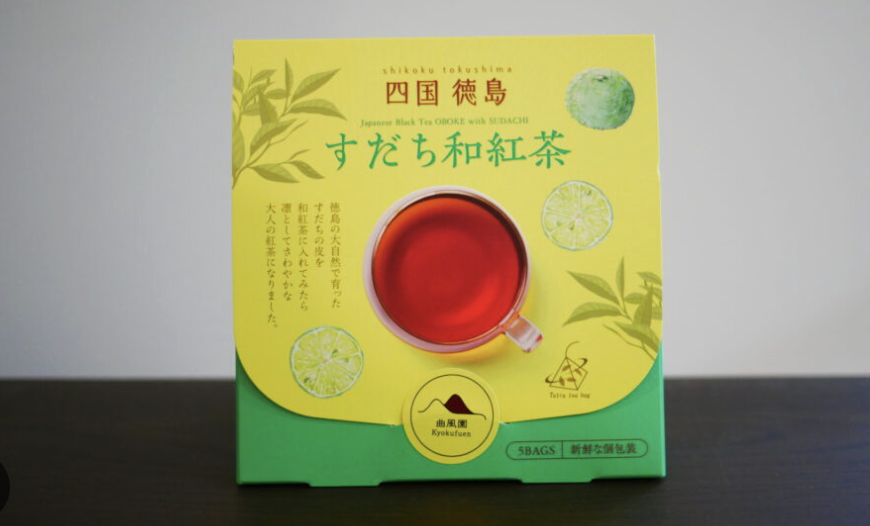

What is Sudachi?

Sudachi is an exceptionally rare Japanese citrus grown almost exclusively in Tokushima Prefecture. Its aroma is clearer than lemon, gentler than lime, and noticeably low in bitterness. The fresh, green scent that rises from its peel is its defining characteristic, and that noble fragrance is often likened to "the morning air of a mountain village in Japan." At Kyokufu-en, we wove dried sudachi peel—utterly free of artificial flavorings and additives—into a craft wakocha nurtured in the rugged mountains of Oboke. Take a sip and the pure terroir of the hidden region and a vivid citrus breeze will pierce your senses.
Sudachi × Wakocha

The exquisite balance of this blend is the work of third-generation Magari Hiroki, a master whose skill in assessing tea varieties and flavors is recognized by the highest national rank, Tea Appraisal Technical Ninth Rank—akin to a sommelier for tea. The foundation is the premium green-tea cultivar "Yabukita," grown pesticide-free on our estate. We transform the spring's vibrant first flush into an exquisite sencha, then take the slightly leaner summer second flush, wither it carefully, and gently roll and oxidize it to create the deep, softly sweet character unique to wakocha. This process breathes new value into the often-overlooked second flush and achieves perfect harmony with the sudachi's aroma. Unbound by tradition, this product embodies the young craftsman's conviction that "culture continues when we dare to try something new," distilled into a single offering from a remote land.